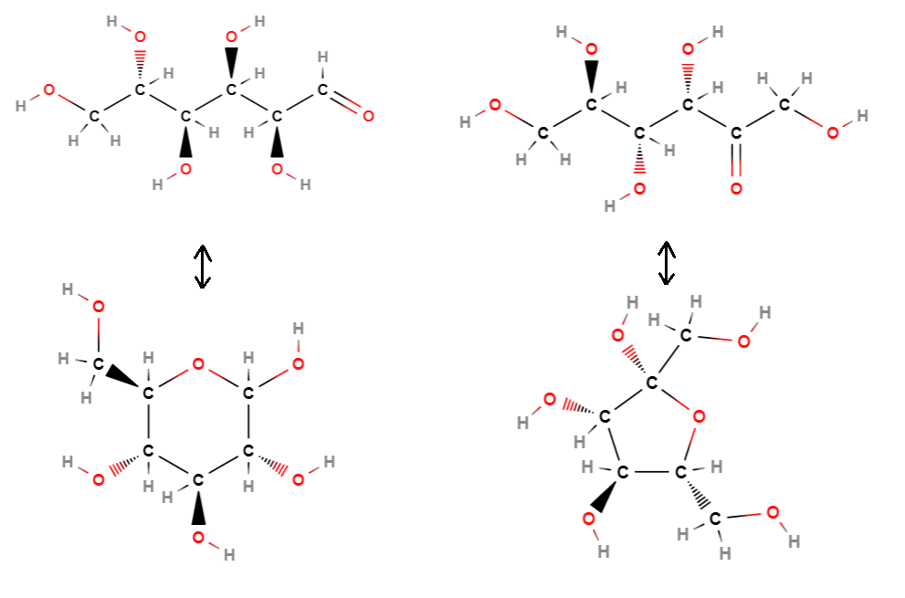
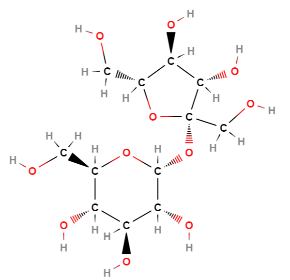

Hiilihydraatit
Contents
Hiilihydraatit#
Hiilihydraatit ovat orgaanisia yhdisteitä, jotka koostuvat hiilestä, vedystä ja hapesta. Niiden molekyylikaava on muotoa \(\text{C}_m (\text{H}_2 \text{O})_n\) eli ne voidaan aina esittää \(m\) kappaleena hiiliä ja \(n\) kappaleena vesimolekyylejä. Hiilihydraateissa on funktionaalisina ryhminä \(\text{OH}\)-ryhmiä (kuten alkoholeissa) ja happisiltoja (kuten eettereissä). Hiilihydraattien hiilivetyrunko voi sisältää rengasmaisia rakenteita.
Kuvassa esimerkkinä hiilihydraateista on maidossa esiintyvä sokeri, laktoosi. Sen molekyylikaava on \(\text{C}_{12} \text{H}_{22} \text{O}_{11}\), toisin merkittynä \(\text{C}_{12} (\text{H}_2 \text{O})_{11}\).
Hiilihydraatit muodostavat suuren osan kasveissa esiintyvistä orgaanisista yhdisteistä. Tärkeitä kasvikunnan hiilihydraatteja ovat esim. glukoosi, tärkkelys ja selluloosa. Kasvit pystyvät tuottamaan hiilihydraatteja (lähinnä glukoosia) ja happea fotosynteesin avulla hiilestä ja vedestä. Kasvit saavat hiiliatomit ilmasta hiilidioksidin (\(\text{CO}_2\)) mukana ja veden juuriensa kautta. Yhteyttämisreaktion periaatetta kuvaa yhtälö:
\(6~\text{CO}_2+6 \text{H}_2\text{O} \rightarrow \text{C}_6 \text{H}_{12} \text{O}_6+6~\text{O}_2\)
Kemiassa hiilihydraatit ryhmitellään sokeriyksiköiden lukumäärän mukaan monosakkarideihin, disakkarideihin, oligosakkarideihin ja polysakkarideihin.
Disakkaridit: 2 kpl monosakkaridiyksiköitä
Oligosakkaridit: 3–10 kpl monosakkariyksiköitä
Polysakkaridit: yli 10 kpl monosakkaridiyksiköitä
Puukemian kannalta tärkeimpiä hiilihydraatteja ovat polysakkaridit, erityisesti tärkkelys ja selluloosa. Polysakkaridit voidaan luokitella seuraavasti:
homopolysakkaridit: vain samanlaisia monosakkaridimolekyylejä
heteropolysakkaridit: erilaisia monosakkaridimolekyylejä
Ravitsemustieteessä hiilihydraatteja ryhmitellään seuraavasti:
sokerit
monosakkaridit: glukoosi, fruktoosi, galaktoosi
disakkaridit: sakkaroosi, laktoosi, maltoosi
polysakkaridit
tärkkelys
ravintokuitu: liukeneva ja liukenematon
Monosakkaridit#
Monosakkaridit ovat hiilihydraattien perusyksiköitä, joista kaikki muut hiilihydraatit rakentuvat. Monosakkarideissa on 3–8 kpl \(\text{CHOH}\)-perusyksikköjä.
Monosakkaridien yleisnimitys määräytyy hiiliatomien määrän mukaan, esimerkiksi 5-hiiliset ovat pentooseja ja 6-hiiliset ovat heksooseja. Monosakkareidella on vakiintuneet erityisnimet.
Monosakkaridin yhdessä hiiliatomissa on ns. karbonyyliryhmä \(\text{C}=\text{O}\), ja muissa \(\text{OH}\)-ryhmä. Monosakkaridit jaetaan \(\text{C}=\text{O}\) -ryhmän sijoittumisen mukaan aldooseihin (\(\text{C}=\text{O}\) -ryhmä molekyylin päädyssä) ja ketooseihin (\(\text{C}=\text{O}\) -ryhmä molekyylin keskiosassa).
Kuvassa vasemmalla on glukoosi (kuuluu aldooseihin) ja oikealla fruktoosi (kuuluu ketooseihin). Kumpikin on yleisnimeltään heksoosi, sillä niissä on kuusi hiiltä. Glukoosia eli rypälesokeria esiintyy mm. marjoissa, hedelmissä ja juureksissa ja myös ihmisen veressä. Fruktoosia eli hedelmäsokeria on mm. makeissa hedelmissä, marjoissa ja hunajassa. Kumpikin voi myös esiintyä avoketjuisena tai rengasrakenteisena molekyylinä ja vaihdella näiden muotojen välillä. Rengasrakenteiset muodot ovat luonnossa yleisempiä.

Riboosi on pentooseihin kuuluva monosakkaridi. Sitä esiintyy luonnossa nukleiinihappojen (RNA) osana. Riboosia muodostuu soluissa glukoosista monimutkaisen reaktioketjun kautta.
Galaktoosia on eniten maitosokerissa eli laktoosissa, jossa se on sitoutunut glukoosiin. Lisäksi galaktoosia esiintyy vesiliukoisessa ravintokuidussa, pektiinissä, jota on mm. palkokasveissa, marjoissa ja hedelmissä.
Disakkaridit#
Disakkaridien molekyylit ovat muodostuneet kahdesta monosakkaridimolekyylistä (di = kaksi; sakkaridi = sokeri).
“Tavallinen sokeri” on sakkaroosia. Sitä esiintyy mm. sokerijuurikkaissa, marjoissa ja hedelmissä sekä jonkin verran kasviksissa ja viljoissa. Sakkaroosi koostuu yhdestä glukoosi- ja yhdestä fruktoosiyksiköstä, jotka ovat liittyneet yhteen kondensaatioreaktiolla. Tuloksena on kuvan mukainen rakenne. Toinen yleinen disakkaridi, laktoosi, koostuu glukoosista ja galaktoosista. Disakkaridit hydrolysoituvat eli hajoavat helposti happokäsittelyllä niiksi sokereiksi, joista ne ovat muodostuneet.

Oligosakkaridit#
Oligosakkaridit muodostuvat 3 – 10 monosakkaridiyksiköstä (oligo = usea). Niitä on monissa kasviksissa, kuten sipuleissa, herneissä ja linsseissä. Ohutsuolen entsyymit eivät pysty pilkkomaan oligosakkarideja imeytyvään muotoon eli monosakkarideiksi. Oligosakkaridit ovat ravintokuitua ja voivat toimia prebiootteina, eli lisätä yhden tai useamman edullisen bakteerin kasvua paksusuolessa.
Polysakkaridit#
Polysakkarideissa on yli 10 sokeriyksikköä sitoutuneena toisiinsa (poly = monta). Tärkeimmät polysakkaridit ovat tärkkelys ja selluloosa. Molemmat muodostuvat glukoosiyksiköistä ja ovat hyvin suurimolekyylisiä yhdisteitä, mutta glukoosiyksiköiden sitoutumistapa on erilainen. Tärkkelysmolekyylissä on glukoosiyksiköitä 200 - 2000 ja selluloosassa 2000 - 10000. Kummankin yhdisteen kemiallinen kaava on muotoa \((\text{C}_6 \text{H}_{10} \text{O}_5)n\).
Tärkkelys on kasvien vararavinto, jota kasvit valmistavat yksinkertaisemmista monosakkarideista, lähinnä glukoosista. Tärkkelys koostuu sadoista tai tuhansista glukoosimolekyyleistä. On olemassa useita erilaisia tärkkelysmolekyylejä. Tärkkelys varastoituu tärkkelysjyväsiin, joita on runsaasti viljassa ja perunassa sekä palkokasveissa. Puussa tärkkelystä on rungon ytimessä.
Selluloosaa esiintyy useimpien kasvien soluseinämien tukiaineena. Selluloosan tehtävänä on antaa puissa ja kasveissa soluseinämälle lujuutta. Luonnossa selluloosaa on paljon mm. puussa, pellavassa ja puuvillassa. Puuvillan kuidut ovat lähes puhdasta selluloosaa. Sellokuusa muodostuu tuhansista glukoosimolekyyleistä. Glukoosiyksiköt muodostavat kierteisen makromolekyylin. Ne muodostavat selluloosamolekyylin sisälle ja toisten selluloosamolekyylien välille vahvoja vetysidoksia.
Selluloosa on laajimmalle levinnyt orgaaninen molekyyli. Sen hiilimäärä muodostaa yli puolet orgaanisen hiilen kokonaismäärästä maapallolla. Puun kuiva-aineesta on selluloosaa noin 50 %. Molekyylin ominaisuuksiin perehdytään enemmän puun kemian yhteydessä.